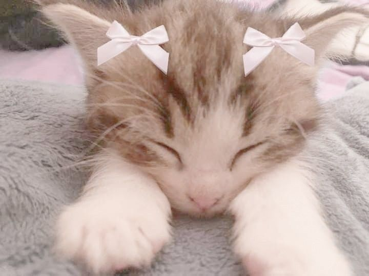
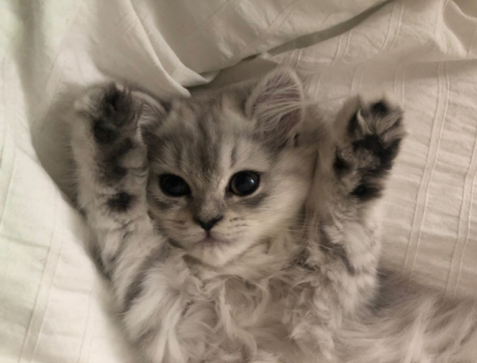
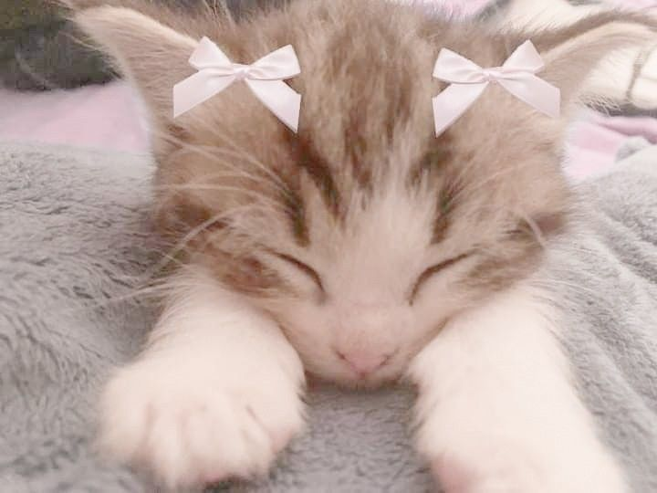
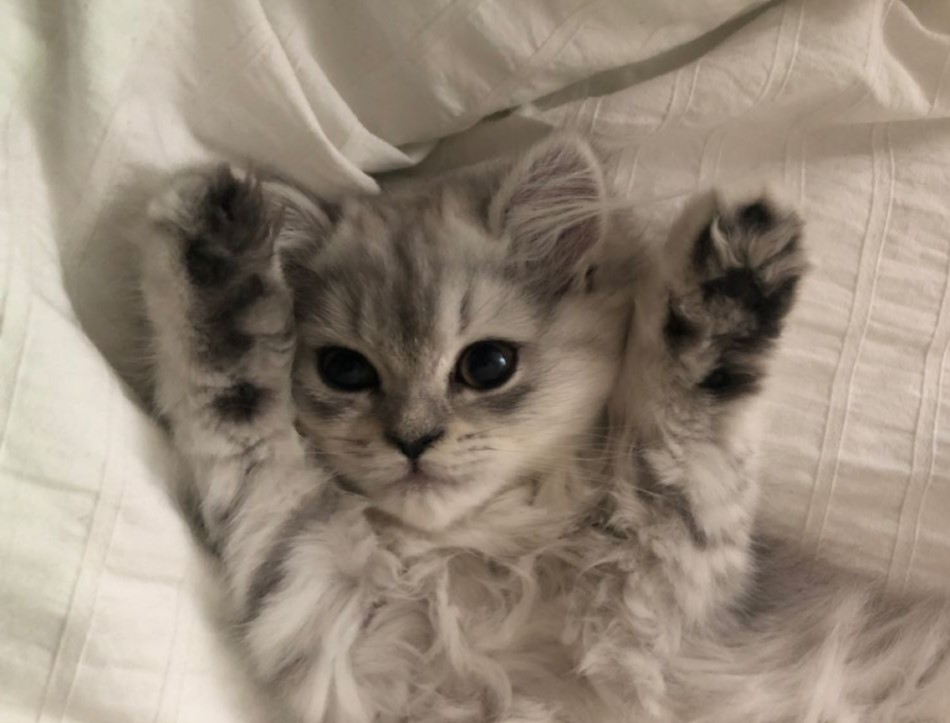
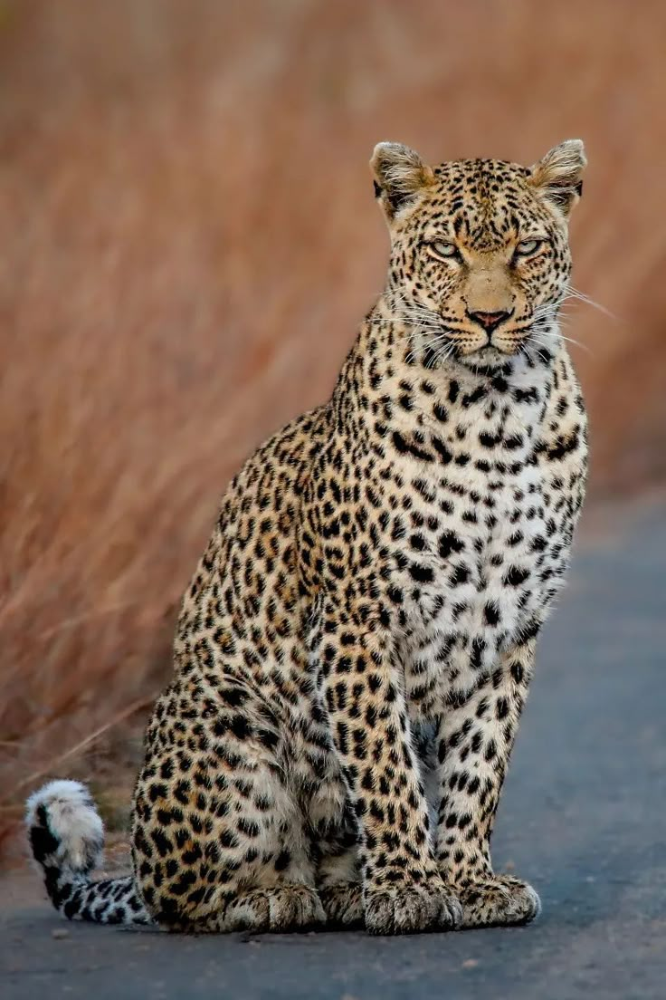
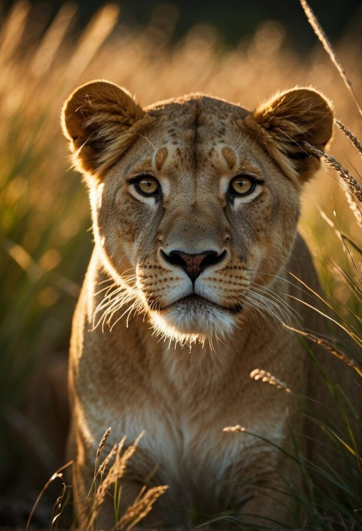
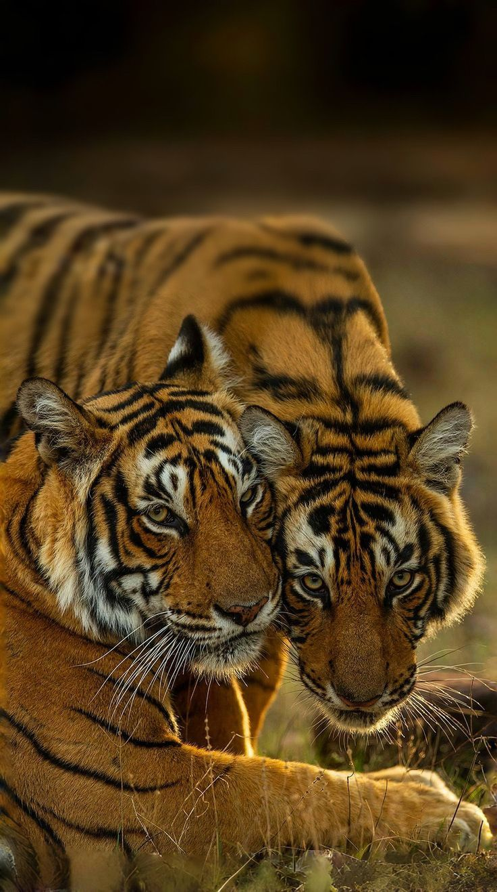
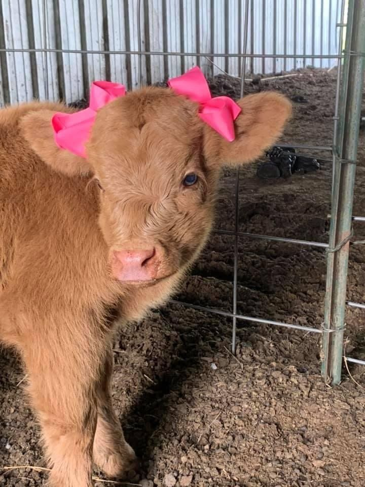
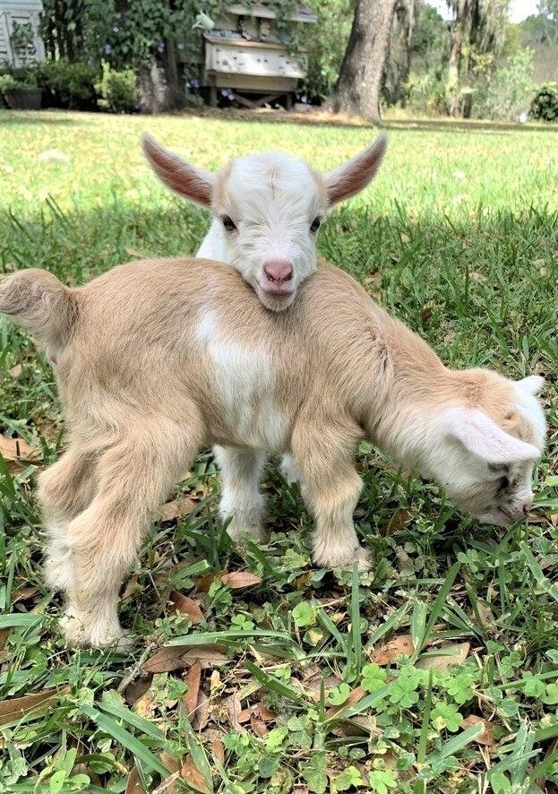
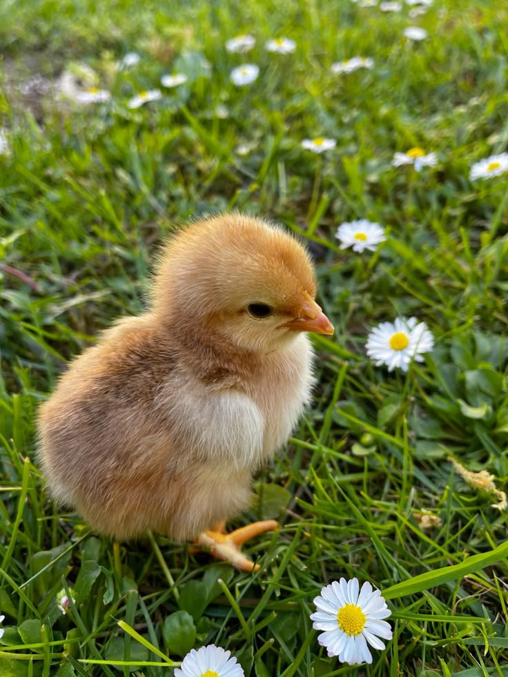

Animalele sunt ființe vii uimitoare, care se mișcă, simt și interacționează cu lumea din jur. Ele vin în toate formele și mărimile, de la micuții fluturi la uriașii elefanți, și fac din natură un loc plin de viață și culoare.Fie că sunt animale de companie, de fermă sau sălbatice, toate au un rol important în ecosistemul nostru.
Animalele domestice sunt acelea care traiesc pe langa casa omului, fiindu-i prietene și ajutoare de nadejde. De obicei, aceste animale sunt crescute și îngrijite în scopul de a oferi companie omului. Exemplele includ câinii, pisicile, peștii, papagalii, etc.
Poză draguță. În imagine avem un câine și o pisică.


Animalele sălbatice sunt acelea care trăiesc în sălbăticie, adică în mediul lor natural, fără intervenția omului. Aceste animale joacă un rol crucial în menținerea echilibrului ecologic, participând activ în lanțurile trofice. Ele sunt esențiale pentru sănătatea ecosistemelor și pentru diversitatea biologică. În sălbăticie, animalele trebuie să își caute hrană, să își construiască adăposturi și să se protejeze de prădători. Exemplele includ ursul, lupul, tigrii, elefanții, leii și multe altele. Aceste specii sunt deseori vulnerabile la schimbările de mediu și la activitățile umane.



Animalele de fermă sunt acelea care sunt crescute de oameni pentru a le folosi în diverse activități, precum producția de lapte, carne, ouă, lână, etc. Acestea includ vacile, porcii, găinile, caprele, etc.Aceste animale sunt esențiale pentru viața rurală și economia agricolă.



Tipuri de animale :
| Tip | Durata de viață | Exemple |
|---|---|---|
| Animale domestice | 10-20 ani | Câine, Pisică, Papagal, Pești, Hamster |
| Animale de fermă | 5-25 ani | Vacă, Cal, Oaie, Capră, Găină |
| Animale sălbatice | 20-30 ani | Urs, Lup, Vulpe |
| Animale marine | 10-80 ani | Balena, Delfin, Crab, Meduză |
| Reptile | 15-70 ani | Șarpe, Crocodil, Broască țestoasă |
Animalele joacă un rol esențial în ecosistem și în viața oamenilor. Animalele domestice oferă companie și sprijin în diverse activități, cele de fermă contribuie la producția de hrană și materii prime, animalele sălbatice mențin echilibrul natural, animalele marine sunt esențiale pentru sănătatea oceanelor, iar reptilele au adaptări unice care le permit să trăiască în diverse medii.
Multe dintre animalele sălbatice sunt amenințate cu dispariția din cauza defrișărilor, braconajului și pierderii habitatului natural. Este important ca fiecare dintre noi să facem un pas pentru a proteja natura și a susține inițiativele de conservare.
Completează formularul de mai jos pentru a ne împărtăși care este animalul tău preferat!
Un site util cu informații despre pisici de casă.
Rase de pisici populare: